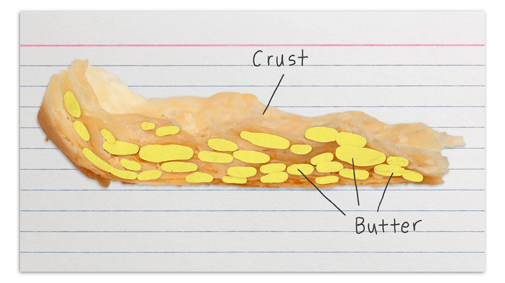

Decide on Your Crust
Life can be tough. However, you never want your pie crust to be tough. If you're keen on a crumbly crust like Graham Cracker, you will need to make a cold or chilled pie filling. If you are fine with that, congrats, you've chosen the quickest and most direct method which you will find here.
If an All-American staple like apple pie is more your jam, proceed to the next segment.
Tools and Ingredients
- Scale
- Bowls
- Food Processor
- Rolling Pin
- Plastic Wrap
- Spatula
- Dull Knife or Bench Scraper
- Pie Pan
Besides the required implements, you will need the following.
- 350g All-Purpose Flour (about 2.5 cups)
- 25g Sugar (about 2 Tablespoons)
- 5g Kosher Salt (about 1 Teaspoon)
- 280g Unslated Butter (10 oz, or 2.5 sticks)
- 85 ml Cold Water (3 oz, or 6 Tablespoons)
Prep Work
The French term mise en place will be familiar to the culinary set, but essentially it boils down to what needs to be done to get setup. Before we start combining our ingredients, we want to premeasure and portion our ingredients. We want to cut up our butter into manageable chunks about 1 tablespoon in size. Try to store your measured water in the fridge or measure it from a cold source directly before we need it. Sifting your flour is a non-essential but helpful step. Finally, clear some room in your work space for you to work in.
The Process
- First, we will add 230g (about 1.75 cups) of our flour to our food processor, along with the salt and sugar.
- Pulse for 1-2 seconds.
- Now add your chunks of butter.
- Pulse until the butter is incorporated and begins to form pearls or peas, about 20 seconds. Next we can add the remaining flour.
- Pulse until the flour is distributed, about 5 seconds.
- Dump the flour mixture into a bowl and mix in the water with the spatula.
- Once everything is incorporated, devide your dough into 2 even lumps.
- Form them into fat, flat disks, and wrap individually with plastic wrap. Store them in the fridge until you're ready to roll out your crust.
EOB or Why?

What you have just accomplished is creating a perfect distribution of fatty dough, surrounded by wet, gluten forming dough. Once we roll out our crust, the fatty dough will form thin incomplete sheets sandwiched between our wet dough. Once we bake our crust, the flour held together by water will be able to form a gluten structure strong enough to hold our crust together, but thanks to the fatty dough, not so strong as to become tough. In addition, the water in the butter will turn to steam and help our fat deposits to become little air pockets full of buttery flavor.
The Fill
No matter the exact flavor or nature of our pie filling, we want to cook it seperately. Although you can warm your finished pie in the oven before serving, if you want a crust that hasn't turned to soggy cardboard, we need to activate all the starch, pectin, gelatin, or whatever binder we are using in our filling first. The benefits of our 2 part approach ensures a better flaky crust, but means we can fill our pie with the exact amount of filling we want, no guessing about shrinkage.
The Fire
We will want to pre-bake our crust (just until the edges brown slightly) before adding any filling to prevent sepage issues.
A good place to start would be baking our bottom crust at 350 degrees F for about 10 to 12 minutes.Finally we can add our top crust, if using, and bake that to perfection and be able to pull our pie out of the oven knowing the filling isn't under or over cooked, but is just right.